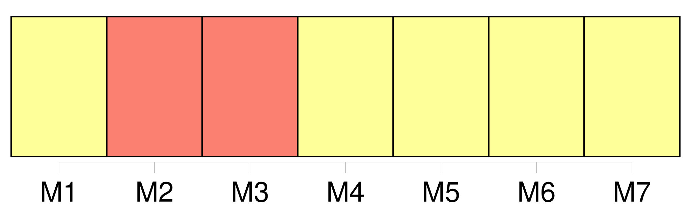
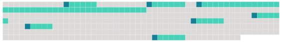

Longueur nb maillons : 7 mentions |
 |
De même, la présente convention sera ouverte à la signature [des organisations régionales d'intégration économique] Pour l'application de la présente convention, [une " organisation régionale d'intégration économique] " est [une organisation constituée d'États souverains d'une région donnée qui a compétence sur certaines matières régies par la convention et qui a été dûment autorisée à signer et à ratifier, accepter, approuver ou adhérer à la présente convention] Sauf au paragraphe 2 de l'article 1, au paragraphe 1, alinéa b ), de l'article 3, à l'alinéa b ) de l'article 5, aux articles 23, 33, 46 et à l'alinéa b ) de l'article 57, toute mention faite d'un " État partie " ou " d'États parties " s'applique également [aux organisations régionales d'intégration économique]
Pour l'application de l'article 24, les mentions faites d'" une majorité des États parties " et d'" un tiers des États parties " ne s'appliquent pas [aux organisations régionales d'intégration économique] [1 phrases]
La présente convention est soumise à la ratification des États et [des organisations d'intégration économique] qui l'ont signée. [6 phrases]
Les instruments déposés par [les organisations régionales d'intégration économique] ne seront pas comptées aux fins du présent paragraphe. |
 |
Il est possible de télécharger la ressource sur la page Ortolang |
Si vous avez des questions ou vous voyez des erreurs, merci d'envoyer un mail à silvia.federzoni89@gmail.com |